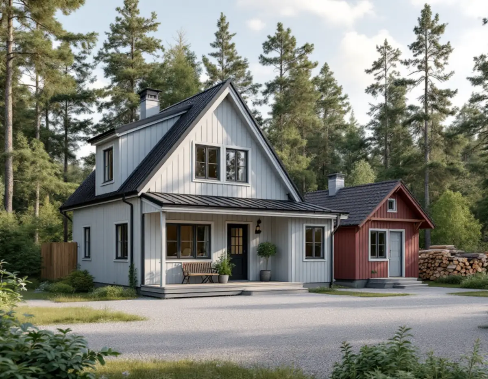
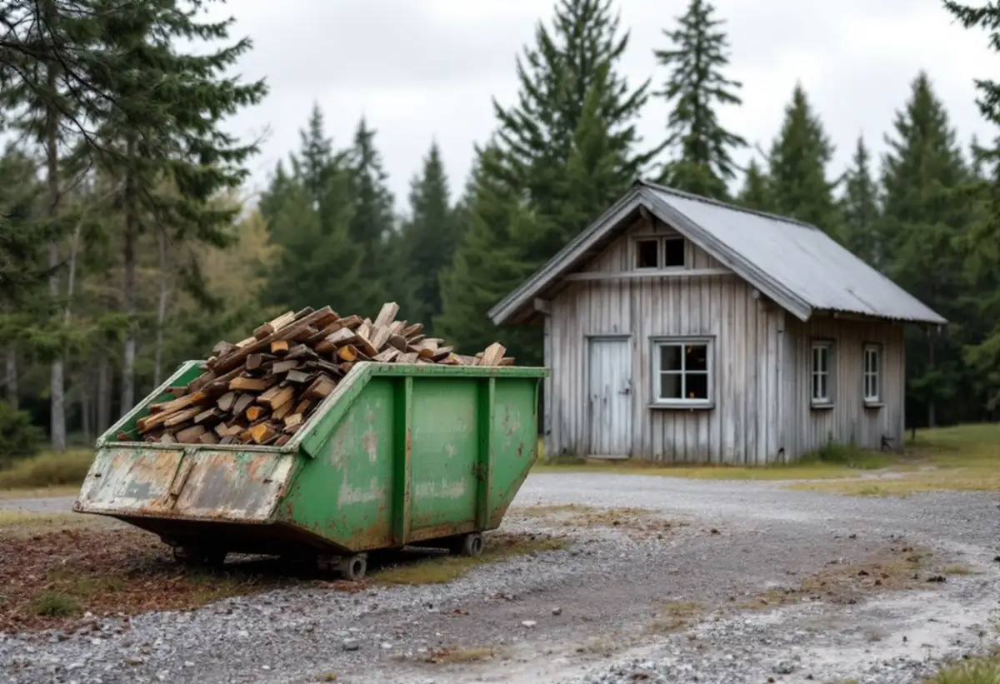

Platsbesök
Vi går igenom det befintliga huset, tomtens höjder och vad som ska rivas eller sparas.
I Österåker finns 13 635 bostäder i småhus enligt SCB:s statistik för 2025. Ska ett äldre hus ersättas med ett nytt handlar de första stegen om att riva rätt, att ändra marken utan att störa grannarna och att veta vad en ny detaljplan kan kosta i gatukostnader. Geal Entreprenad AB bygger nya hus som total entreprenad, med en kontakt genom hela projektet.

Österåkers kommun skriver att rivning innebär att ta bort en byggnad helt, eller en del av den tillsammans med dess bärande stomme. Det räknas som rivning även om grunden ska stå kvar och användas till ett nytt hus, och även om man bara tar bort en veranda. Står stommen kvar och bara icke bärande delar tas bort är det inte rivning.
Inom detaljplan krävs rivningslov för hela eller delar av byggnader. Huvudregeln är att en byggnad som en gång fått bygglov också kräver rivningslov, oavsett storlek. Kommunens exempel är ett garage på 25 kvadratmeter med bygglov, som kräver rivningslov, medan en lovfri friggebod inte gör det. Utanför detaljplan krävs rivningslov bara för särskilt värdefulla byggnader eller byggnader i särskilt värdefulla bebyggelseområden, som syns i kommunens karta över kulturmiljöer.
Oberoende av lovplikten krävs rivningsanmälan om byggnaden är större än 50 kvadratmeter, inom och utanför detaljplan. Det är den befintliga byggnadens yta som avgör, inte hur stor del som rivs. Undantaget är ekonomibyggnader utanför detaljplan.

Till ansökan eller anmälan hör en situationsplan på ett enkelt kartutdrag där det som ska rivas är markerat, ett förslag till kontrollplan och en ifylld materialinventering. Inventeringen ska visa vilka material som är farliga för människor eller miljö och hur de ska tas om hand, hur övrigt rivningsmaterial ska sorteras och om något kan återbrukas eller återvinnas. Det är byggherren som ansvarar för att den görs.
Rivningen får inte börja förrän startbesked finns, och för vissa större rivningar ska byggherren utse en kontrollansvarig som hjälper till med kontrollplanen och med att identifiera material som kan återanvändas. Börjar man innan startbeskedet kan byggnadsnämnden besluta om en sanktionsavgift.
Vi tar fram underlaget, planerar sorteringen och samordnar rivningen med det nya bygget, så att tomten inte står tom längre än nödvändigt. Gäller det i stället en renovering av villan där stommen står kvar räknas det inte som rivning.
Inom detaljplan krävs marklov om markens höjd ändras med mer än 0,5 meter från ursprunglig nivå, och om träd ska fällas där detaljplanen kräver marklov för det. Marklov behövs inte om markåtgärderna ingår i ett bygglov, om marknivån ändras till höjder som planen föreskriver eller om fastigheten ligger utanför detaljplan.
En ansökan om marklov ska innehålla en situationsplan på Nybyggnadskarta C, en markplaneringsritning med släntfot, släntkrön, befintliga och nya höjder och eventuella murar, marksektioner, fasadritningar med gamla och nya marklinjer och ett förslag till kontrollplan.
Kommunen påminner om att du ansvarar för att dagvattnet från din fastighet inte leds över till grannarna, och att olika fyllnadsmassor och ytskikt leder undan vatten olika bra. Ledningar i marken kan kontrolleras via Ledningskollen, och går någon av är det du som ansvarar. Sprängning kräver oftast tillstånd från Polismyndigheten, och hittar man något som kan vara en fornlämning ska arbetet stoppas och Länsstyrelsen kontaktas.
När gator och andra allmänna platser byggs ut i samband med en ny eller ändrad detaljplan kan kommunen ta ut gatukostnader. I så kallade förnyelseområden kan kostnaderna fördelas mellan de berörda fastighetsägarna. En gatukostnadsutredning visar vilka fastigheter som ingår, vilka kostnader som omfattas och hur de fördelas. Den går ut på samråd och granskning, och beslutet fattas av kommunfullmäktige. Just nu pågår en utredning för detaljplanen Valsättra del 2.
Betalningsskyldigheten inträder först när utbyggnaden är klar och den allmänna platsen kan användas, normalt efter slutbesiktning. Anstånd eller avbetalning kan i vissa fall beviljas. Säljs fastigheten efter att betalningsskyldigheten inträtt är det den nya ägaren som ska betala, men inte belopp som förfallit före tillträdet. Fördelningsbeslutet kan laglighetsprövas, och själva kostnaden för en fastighet kan prövas av mark- och miljödomstolen.
För den som planerar ett nytt hus är det värt att känna till, eftersom ett pågående planarbete kan påverka både när ett nytt hus kan byggas och vad det kostar totalt. Om taket på ett befintligt hus, se takrenovering i Österåker, och om arbetssättet under byggfirma.
Vi går igenom det befintliga huset, tomtens höjder och vad som ska rivas eller sparas.
Detaljplan, kulturmiljökarta och eventuell gatukostnadsutredning kontrolleras.
Rivning, mark och nybygge redovisas var för sig.
Rivningsanmälan eller rivningslov, materialinventering och vid behov marklov tas fram.
Sorterad rivning efter startbesked, sedan schakt och grund.
Stomme, tak och installationer, och till sist genomgång med dig.
Ett helt nytt hus ger inget rotavdrag, inte heller om det ersätter ett rivet. För ett befintligt hus kan en tillbyggnad ge avdrag om den sitter ihop med ytterväggen till minst 75 procent på någon sida eller har en dörr emellan. Sprängarbete som krävs för en utbyggnad ger också avdrag, liksom att återställa marken inom sex månader efter ett godkänt gräv- eller markarbete.
Avdraget är 30 procent av arbetskostnaden, högst 50 000 kronor per person och år och högst 75 000 kronor tillsammans med rutavdrag. Material och resor räknas inte. Vi drar avdraget direkt på fakturan.
Hur stort huset som ska rivas är, vilka material inventeringen hittar, hur mycket marken ska ändras och vad det nya huset ska innehålla. Gatukostnader och kommunens avgifter tillkommer utanför vår offert. Efter ett gratis platsbesök får du ett skriftligt kostnadsförslag.
Total entreprenad för villan.
Byggfirma →Takbyte, takbesiktning och plåtarbeten.
Takläggare i Österåker →Svinninge, sommarvillor och sportstugor.
Takrenovering i Österåker →Uthyrning, kulturmiljö och fornlämningar.
Attefallshus i Österåker →VA-utbyggnad, öar och vattensmarta val.
Badrumsrenovering i Österåker →Sommarvillornas fasadkulörer.
Fasadmålning i Österåker →Skärgårdshus, fritidshus och villor i Österåker.
Fasadrenovering i Österåker →Varsamhet, kulturvärden och kustlägen i Österåker.
Fönsterbyte i Österåker →Sommarvillorna i Svinninge.
Fönsterrenovering i Österåker →Jämna golv och färre trösklar.
Golvläggare i Österåker →Golv i sommarhus som blivit bostad.
Golvslipning i Österåker →Helårshus, brunn och avlopp.
Köksrenovering i Österåker →Sommarvillor, röda stugor och efterkrigsvillor.
Målare i Österåker →Bryggor, altaner och äldre snickerier.
Snickare i Österåker →Lertegel, lovfrågan och återbruk av pannor.
Takbyte i Österåker →Sommarvillan blir åretruntbostad.
Tapetsering i Österåker →Grannmedgivande, strandskydd och utstakning.
Tillbyggnad i Österåker →Fritidshuset, värmen och anmälan.
Totalrenovering i Österåker →